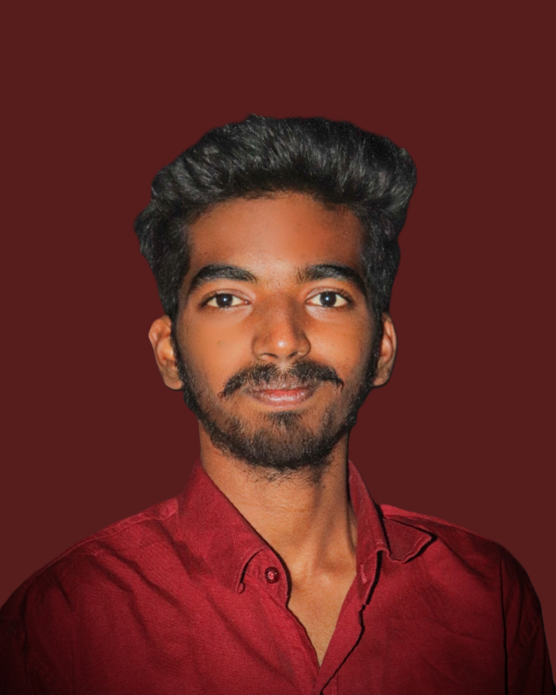

|  |
SUNKOJI VIVEK CHARYEmail:wikki7676@gamil.com phno:7386047676 |
As a person with a strong background in object oriented programming ,web development and system architecture. I am looking for a position in software development where i can leverage my skills in building scalable and efficient applications with experience in technologies like HTML,CSS,JAVA SCRIPT, and frameworks such as React and Node.js. I am passionate about creating user centric solutions that improve the user experience and meet business needs.
CMR Engineering College(2021 - 2025)
B-Tech in Computer Science and Engineering, CGPA: 7.53Sri Chavitanya IIT Academy(2019-2021)
Intermediate, GPA: 93.4Kakatiya High School(2019)
SSC, GPA: 9.3Technical Skills
Soft Skills
Traffic accident severity prediction using Machine learning and Deep learning
The aim of this project is to develop a predictive model to classify and assess the severity of traffic accidents based on historical data and relevant features. Accurately predicting the severity of an accident can help mitigate risks, improve emergency response times, and guide the implementation of safety measuresDetecting Drowsiness of Drivers
This project aim is to develop a real-time drowsiness detection system using Convolutional Neural Networks (CNN), a deep learning technique. The system will analyze facial features to identify signs of drowsiness, such as eye closure and yawning, and alert drivers to prevent accidents.I hereby declare that all the above-mentioned information is true and correct to the best of my Knowledge.
Place :Hyderabad
Signature/E-signature : S.Vivek chary